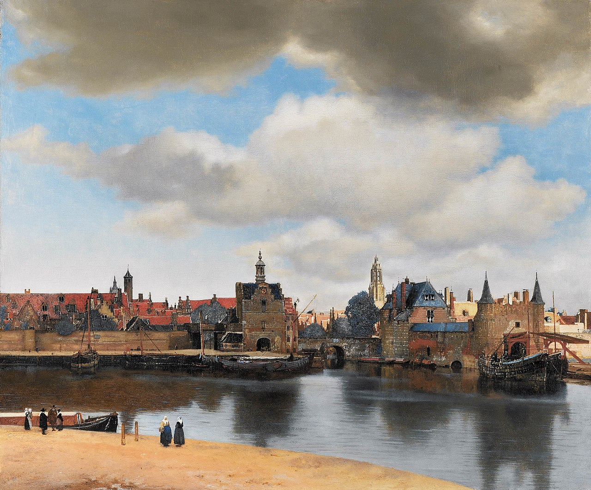

Overview
View of Delft (Dutch: Gezicht op Delft) is an oil painting by Johannes Vermeer, painted ca. 1660–1661. The painting of the Dutch artist's hometown is among his most popular, painted at a time when cityscapes were uncommon. It is one of three known paintings of Delft by Vermeer, along with The Little Street and the lost painting House Standing in Delft. The use of pointillism in the work suggests that it postdates The Little Street.
Description
The landscape was painted from an elevated position to the southeast of Delft, possibly the upper floor of a house on the quayside across the river Schie. The artist is looking back to the city to the northwest, with the Schiedam Gate (nl) in the middle of the composition, and the Rotterdam Gate (nl) and its barbican to the right, all reflected in the water of the harbour created in 1616-1620. Behind the Schiedam Gate is the long red-roofed arsenal (the Armamentarium). It is a morning scene, with the sun to the east (viewer's right) illuminating the Protestant Nieuwe Kerk ("New Church", right of centre) before its bells were replaced in 1660. The New Church in Delft the burial place of William the Silent and other members of the House of Orange-Nassau. To the left is the tower the "De Papegaey" (Parrot) brewery (since demolished) and, to its left, the top of the tower of the Oude Kerk ("Old Church"). Some barges are drawn up on the quayside, with a few people passing by. The top half of the painting is dominated by a cloudy sky, with a dark cloud suggesting a rain shower has just passed. It is believed that Vermeer created this painting using an optical device - possibly a camera obscura, or a telescope - to capture the detail.
Painting materials
The technical analysis shows that Vermeer used a limited choice of pigments for this painting:
- lead white
- yellow ochre
- natural ultramarine
- madder lake
His painting technique, on the other hand, is very elaborate and meticulous.
